原文连接:https://www.cnblogs.com/yichunguo/p/11775270.html
目录
- 1、告白IO流的四点明确
- 2、File类
- 3、初探IO流
- 字符流Reader和Writer的故事
- 字符流
- 1、 字符输入流（Reader）
- 2、字符输出流（Writer）
- 1、缓冲流【掌握】
- 2、转换流【掌握】
- 3、序列化流【理解】
- 4、打印流【掌握】
- 5、Properties属性类
前言
io流用到的地方很多，就比如上传下载，传输，设计模式等....基础打扎实了，才能玩更高端的。
在博主认为真正懂IO流的优秀程序员每次在使用IO流之前都会明确分析如下四点：
（1）明确要操作的数据是数据源还是数据目的(也就是要读还是要写)
（2）明确要操作的设备上的数据是字节还是文本
（3）明确数据所在的具体设备
（4）明确是否需要额外功能（比如是否需要转换流、高效流等）
以上四点将会在文章告白IO流的四点明确里面小结一下，如果各位真能熟练以上四点，我觉得这篇文章你就没必要看了，因为你已经把IO玩弄与股掌之中，万物皆可被你盘也就也不再话下了。
@
1、告白IO流的四点明确
（1）明确要操作的数据是数据源还是数据目的(要读还是要写)
源：
InputStream Reader
目的：
OutputStream Writer
（2）明确要操作的设备上的数据是字节还是文本
源：
字节： InputStream
文本： Reader
目的：
字节： OutputStream
文本： Writer
（3）明确数据所在的具体设备
源设备：
硬盘：文件
File开头内存：数组，字符串
键盘：
System.in网络：
Socket
对应目的设备：
硬盘：文件
File开头内存：数组，字符串
屏幕：
System.out网络：
Socket
（4）明确是否需要额外功能
需要转换—— 转换流 InputStreamReader 、OutputStreamWriter
需要高效—— 缓冲流Bufferedxxx
多个源—— 序列流 SequenceInputStream
对象序列化—— ObjectInputStream、ObjectOutputStream
保证数据的输出形式—— 打印流PrintStream 、Printwriter
操作基本数据，保证字节原样性——DataOutputStream、DataInputStream
到这里，我们再来看看IO流的分类吧
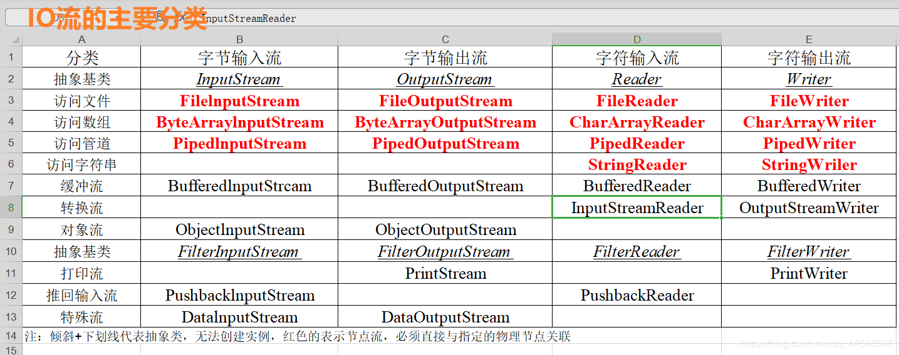
OK，准备好了告白IO流了咩？
2、File类
至于IO流，也就是输入输出流，从文件出发到文件结束，至始至终都离不开文件，所以IO流还得从文件File类讲起。
1.1 File概述
java.io.File 类是专门对文件进行操作的类，只能对文件本身进行操作，不能对文件内容进行操作。
java.io.File 类是文件和目录路径名的抽象表示，主要用于文件和目录的创建、查找和删除等操作。
怎么理解上面两句话？其实很简单！
第一句就是说File跟流无关，File类不能对文件进行读和写也就是输入和输出！
第二句就是说File主要表示类似D:\\文件目录1与D:\\文件目录1\\文件.txt,前者是文件夹（Directory）后者则是文件(file)，而File类就是操作这两者的类。
1.2 构造方法
在java中，一切皆是对象，File类也不例外，不论是哪个对象都应该从该对象的构造说起，所以博主来分析分析File类的构造方法。首先从API开始着手
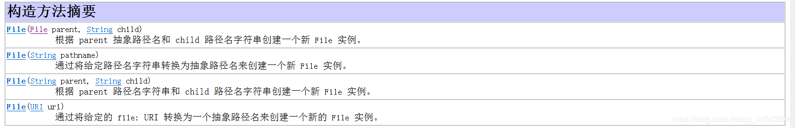
我们主要来学习一下比较常用的三个：
1、 public File(String pathname) ：通过将给定的路径名字符串转换为抽象路径名来创建新的 File实例。
2、 public File(String parent, String child) ：从父路径名字符串和子路径名字符串创建新的 File实例。
3、 public File(File parent, String child) ：从父抽象路径名和子路径名字符串创建新的 File实例。
看字描述不够生动不够形象不得劲？没得事，下面进行构造举例，马上就生动形象了，代码如下：
1. 一个File对象代表硬盘中实际存在的一个文件或者目录。
2. File类构造方法不会给你检验这个文件或文件夹是否真实存在，因此无论该路径下是否存在文件或者目录，都不影响File对象的创建。
// 文件路径名
String path = "D:\\123.txt";
File file1 = new File(path);
// 文件路径名
String path2 = "D:\\1\\2.txt";
File file2 = new File(path2); -------------相当于D:\\1\\2.txt
// 通过父路径和子路径字符串
String parent = "F:\\aaa";
String child = "bbb.txt";
File file3 = new File(parent, child); --------相当于F:\\aaa\\bbb.txt
// 通过父级File对象和子路径字符串
File parentDir = new File("F:\\aaa");
String child = "bbb.txt";
File file4 = new File(parentDir, child); --------相当于F:\\aaa\\bbb.txtFile类的注意点：
- 一个File对象代表硬盘中实际存在的一个文件或者目录。
- File类构造方法不会给你检验这个文件或文件夹是否真实存在，因此无论该路径下是否存在文件或者目录，都不影响File对象的创建。
1.3 常用方法
File的常用方法主要分为获取功能、获取绝对路径和相对路径、判断功能、创建删除功能的方法
1.3.1 获取功能的方法
1、public String getAbsolutePath() ：返回此File的绝对路径名字符串。
2、public String getPath() ：将此File转换为路径名字符串。
3、public String getName() ：返回由此File表示的文件或目录的名称。
4、public long length() ：返回由此File表示的文件的长度。
以上方法测试，代码如下【注意测试以自己的电脑文件夹为准】：
public class FileGet {
public static void main(String[] args) {
File f = new File("d:/aaa/bbb.java");
System.out.println("文件绝对路径:"+f.getAbsolutePath());
System.out.println("文件构造路径:"+f.getPath());
System.out.println("文件名称:"+f.getName());
System.out.println("文件长度:"+f.length()+"字节");
File f2 = new File("d:/aaa");
System.out.println("目录绝对路径:"+f2.getAbsolutePath());
System.out.println("目录构造路径:"+f2.getPath());
System.out.println("目录名称:"+f2.getName());
System.out.println("目录长度:"+f2.length());
}
}
输出结果：
文件绝对路径:d:\aaa\bbb.java
文件构造路径:d:\aaa\bbb.java
文件名称:bbb.java
文件长度:2116字节
目录绝对路径:d:\aaa
目录构造路径:d:\aaa
目录名称:aaa
目录长度:3236注意：
length()，表示文件的长度。但是File对象表示目录，则返回值未指定。
1.3.2 绝对路径和相对路径
绝对路径：一个完整的路径，以盘符开头，例如F://aaa.txt。
相对路径：一个简化的路径，不以盘符开头,例如//aaa.txt//b.txt。
1、路径是不区分大小写
2、路径中的文件名称分隔符windows使用反斜杠,反斜杠是转义字符,两个反斜杠代表一个普通的反斜杠
//绝对路径
public class FilePath {
public static void main(String[] args) {
// D盘下的bbb.java文件
File f = new File("D:\\bbb.java");
System.out.println(f.getAbsolutePath());
// 项目下的bbb.java文件
File f2 = new File("bbb.java");
System.out.println(f2.getAbsolutePath());
}
}
输出结果：
D:\bbb.java
D:\java\bbb.java1.3.3判断功能的方法
1、 public boolean exists() ：此File表示的文件或目录是否实际存在。
2、 public boolean isDirectory() ：此File表示的是否为目录。
3、public boolean isFile() ：此File表示的是否为文件。
方法演示，代码如下：
public class FileIs {
public static void main(String[] args) {
File f = new File("d:\\aaa\\bbb.java");
File f2 = new File("d:\\aaa");
// 判断是否存在
System.out.println("d:\\aaa\\bbb.java 是否存在:"+f.exists());
System.out.println("d:\\aaa 是否存在:"+f2.exists());
// 判断是文件还是目录
System.out.println("d:\\aaa 文件?:"+f2.isFile());
System.out.println("d:\\aaa 目录?:"+f2.isDirectory());
}
}
输出结果：
d:\aaa\bbb.java 是否存在:true
d:\aaa 是否存在:true
d:\aaa 文件?:false
d:\aaa 目录?:true1.3.4 创建删除功能的方法
public boolean createNewFile()：文件不存在，创建一个新的空文件并返回true，文件存在，不创建文件并返回false。public boolean delete()：删除由此File表示的文件或目录。
public boolean mkdir()：创建由此File表示的目录。public boolean mkdirs()：创建由此File表示的目录，包括任何必需但不存在的父目录。
其中，mkdirs()和mkdir()方法类似，但mkdir()，只能创建一级目录，mkdirs()可以创建多级目录比如//a//b//c，所以开发中一般用mkdirs();
这些方法中值得注意的是createNewFile方法以及mkdir与mkdirs的区别
方法测试，代码如下：
public class FileCreateDelete {
public static void main(String[] args) throws IOException {
// 文件的创建
File f = new File("aaa.txt");
System.out.println("是否存在:"+f.exists()); // false
System.out.println("是否创建:"+f.createNewFile()); // true
System.out.println("是否创建:"+f.createNewFile()); // 以及创建过了所以再使用createNewFile返回false
System.out.println("是否存在:"+f.exists()); // true
// 目录的创建
File f2= new File("newDir");
System.out.println("是否存在:"+f2.exists());// false
System.out.println("是否创建:"+f2.mkdir()); // true
System.out.println("是否存在:"+f2.exists());// true
// 创建多级目录
File f3= new File("newDira\\newDirb");
System.out.println(f3.mkdir());// false
File f4= new File("newDira\\newDirb");
System.out.println(f4.mkdirs());// true
// 文件的删除
System.out.println(f.delete());// true
// 目录的删除
System.out.println(f2.delete());// true
System.out.println(f4.delete());// false
}
}注意：
delete方法，如果此File表示目录，则目录必须为空才能删除。
1.4 目录的遍历
public String[] list()：返回一个String数组，表示该File目录中的所有子文件或目录。public File[] listFiles()：返回一个File数组，表示该File目录中的所有的子文件或目录。
public class FileFor {
public static void main(String[] args) {
File dir = new File("G:\光标");
//获取当前目录下的文件以及文件夹的名称。
String[] names = dir.list();
for(String name : names){
System.out.println(name);
}
//获取当前目录下的文件以及文件夹对象，只要拿到了文件对象，那么就可以获取更多信息
File[] files = dir.listFiles();
for (File file : files) {
System.out.println(file);
}
}
}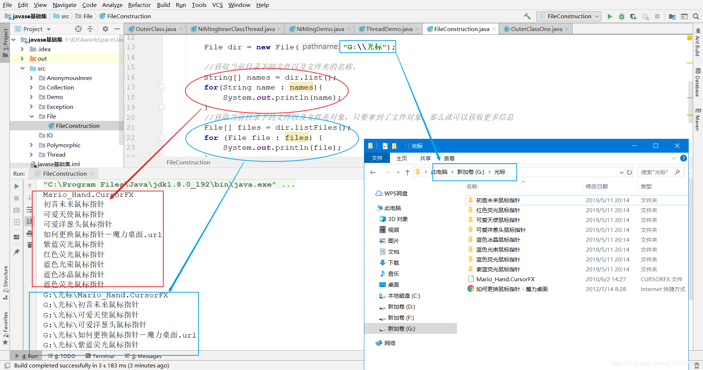
listFiles在获取指定目录下的文件或者文件夹时必须满足下面两个条件
1，指定的目录必须存在
2，指定的必须是目录。否则容易引发返回数组为null，出现NullPointerException异常
1.5 递归遍历文件夹下所有文件以及子文件
不说啥了，直接上代码：
package File;
import java.io.File;
//递归遍历文件夹下所有的文件
public class RecursionDirectory {
public static void main(String[] args) {
File file=new File("D:\\java专属IO测试");
Recursion(file);
}
public static void Recursion(File file){
//1、判断传入的是否是目录
if(!file.isDirectory()){
//不是目录直接退出
return;
}
//已经确保了传入的file是目录
File[] files = file.listFiles();
//遍历files
for (File f: files) {
//如果该目录下文件还是个文件夹就再进行递归遍历其子目录
if(f.isDirectory()){
//递归
Recursion(f);
}else {
//如果该目录下文件是个文件，则打印对应的名字
System.out.println(f.getName());
}
}
}
}如果对上面的代码有疑问，可以随时联系我，博主一直都在！
3、初探IO流
1.1 什么是IO
我想在座各位肯定经历都过这样的场景。当你编辑一个文本文件也好用eclipse打代码也罢，忘记了ctrl+s ，在你关闭文件的哪一瞬间手残点了个不该点的按钮，但你反应过来，心早已拔凉拔凉的了。
我们把这种数据的传输，可以看做是一种数据的流动，按照流动的方向，以内存为基准，分为输入input 和输出output ，即流向内存是输入流，流出内存的输出流。
Java中I/O操作主要是指使用java.io包下的内容，进行输入、输出操作。输入也叫做读取数据，输出也叫做作写出数据。
1.2 IO的分类
根据数据的流向分为：输入流 和 输出流。
- 输入流 ：把数据从
其他设备上读取到内存中的流。 - 输出流 ：把数据从
内存中写出到其他设备上的流。
根据数据的类型分为：字节流 和 字符流。
- 字节流 ：以字节为单位，读写数据的流。
- 字符流 ：以字符为单位，读写数据的流。
分类之后对应的超类（V8提示：超类也就是父类的意思）
| | 输入流 | 输出流
|--|--|--|
| 字节流 | 字节输入流 InputStream |字节输出流 OutputStream |
| 字符流 | 字符输入流 Reader|字符输出流 Writer|
注：
由这四个类的子类名称基本都是以其父类名作为子类名的后缀。
如：InputStream的子类FileInputStream。
如：Reader的子类FileReader。
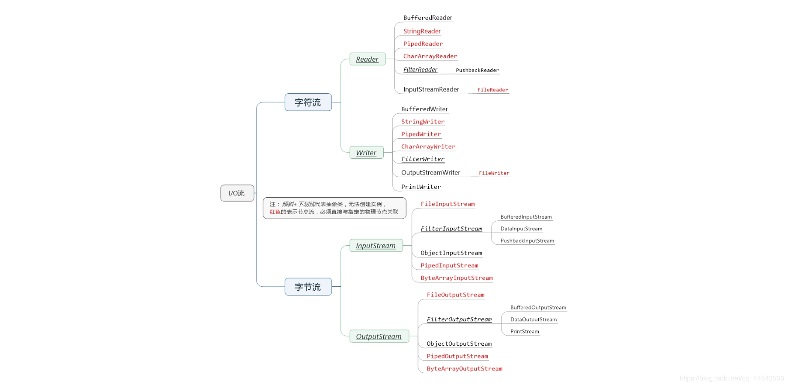
1.3 关于IO的分流向说明
啥都不说了，看图吧
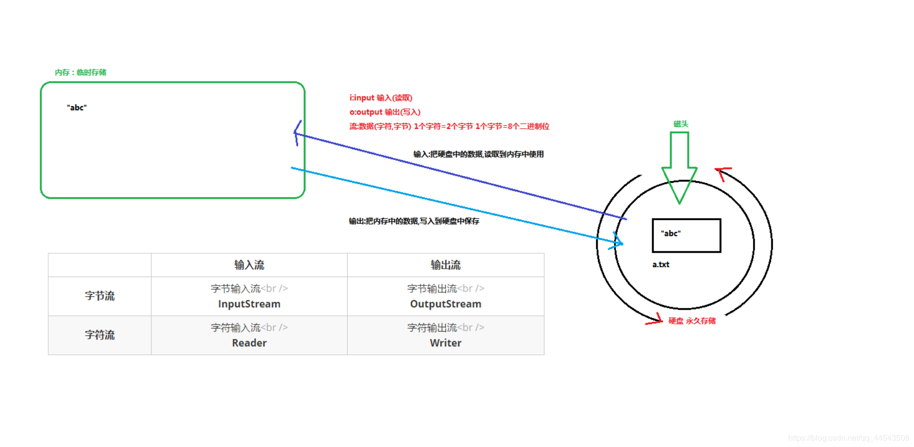
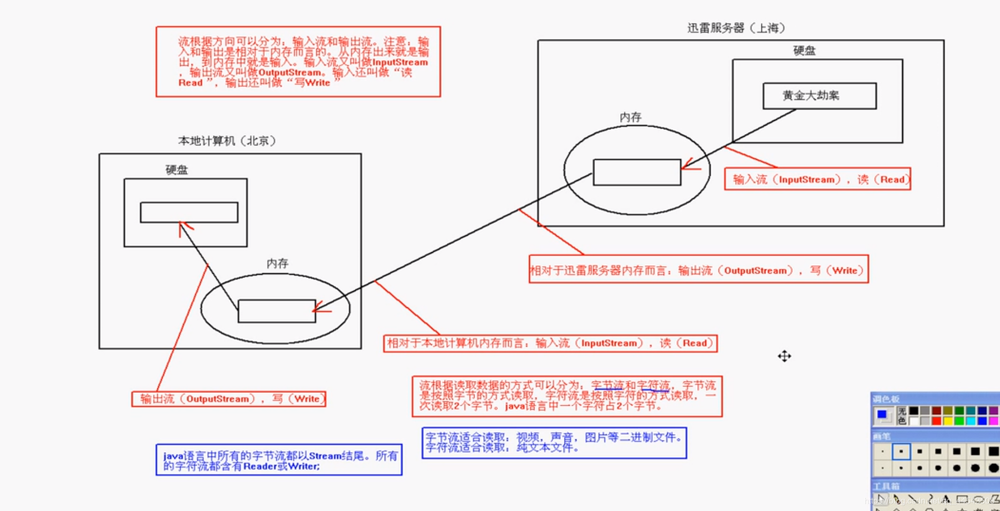
字节流OutputStream与InputStream的故事
OutputStream与InputStream的继承关系
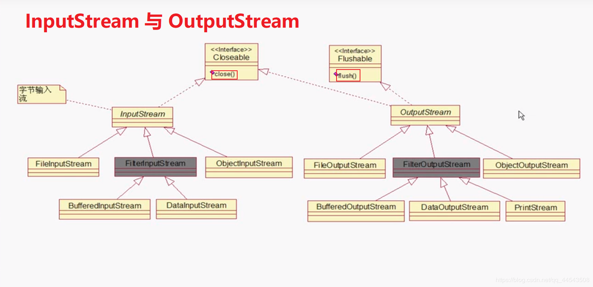
2.1 文件的世界里一切皆为字节
我们必须明确一点的是，一切文件数据(文本、图片、视频等)在存储时，都是以二进制数字的形式保存，都一个一个的字节，那么传输时一样如此。所以，字节流可以传输任意文件数据。在操作流的时候，我们要时刻明确，无论使用什么样的流对象，底层传输的始终为二进制数据。
2.2 字节输出流（OutputStream）
java.io.OutputStream抽象类是表示字节输出流的所有类的超类（父类），将指定的字节信息写出到目的地。它定义了字节输出流的基本共性功能方法，不要问我OutputStream为啥可以定义字节输出流的基本共性功能方法，熊dei啊，上一句说过了OutputStream是字节输出流的所有类的超类，继承知识，懂？(如果是真的不理解的小白同学，可以点击蓝色字体继承进入补习)
字节输出流的基本共性功能方法:
1、
public void close()：关闭此输出流并释放与此流相关联的任何系统资源。
2、public void flush()：刷新此输出流并强制任何缓冲的输出字节被写出。
3、public void write(byte[] b)：将 b.length个字节从指定的字节数组写入此输出流。
4、public void write(byte[] b, int off, int len)：从指定的字节数组写入 len字节，从偏移量 off开始输出到此输出流。 也就是说从off个字节数开始读取一直到len个字节结束
5、public abstract void write(int b)：将指定的字节输出流。
以上五个方法则是字节输出流都具有的方法，由父类OutputStream定义提供，子类都会共享以上方法
FileOutputStream类
OutputStream有很多子类，我们从最简单的一个子类FileOutputStream开始。看名字就知道是文件输出流，用于将数据写出到文件。
FileOutputStream构造方法
不管学啥子，只有是对象，就从构造方法开始！
1、
public FileOutputStream(File file)：根据File对象为参数创建对象。
2、public FileOutputStream(String name)： 根据名称字符串为参数创建对象。
推荐第二种构造方法【开发常用】：
FileOutputStream outputStream = new FileOutputStream("abc.txt");就以上面这句代码来讲，类似这样创建字节输出流对象都做了三件事情：
1、调用系统功能去创建文件【输出流对象才会自动创建】
2、创建outputStream对象
3、把foutputStream对象指向这个文件
注意：
创建输出流对象的时候，系统会自动去对应位置创建对应文件，而创建输出流对象的时候，文件不存在则会报FileNotFoundException异常，也就是系统找不到指定的文件异常。
当你创建一个流对象时，必须直接或者间接传入一个文件路径。比如现在我们创建一个FileOutputStream流对象，在该路径下，如果没有这个文件，会创建该文件。如果有这个文件，会清空这个文件的数据。有兴趣的童鞋可以测试一下，具体代码如下：
public class FileOutputStreamConstructor throws IOException {
public static void main(String[] args) {
// 使用File对象创建流对象
File file = new File("G:\\自动创建的文件夹\\a.txt");
FileOutputStream fos = new FileOutputStream(file);
// 使用文件名称创建流对象
FileOutputStream fos = new FileOutputStream("G:\\b.txt");
}
}FileOutputStream写出字节数据
使用FileOutputStream写出字节数据主要通过Write方法，而write方法分如下三种
public void write(int b)
public void write(byte[] b)
public void write(byte[] b,int off,int len) //从`off`索引开始，`len`个字节- 写出字节：
write(int b)方法，每次可以写出一个字节数据，代码如下：
public class IoWrite {
public static void main(String[] args) throws IOException {
// 使用文件名称创建流对象
FileOutputStream fos = new FileOutputStream("fos.txt");
// 写出数据
fos.write(97); // 写出第1个字节
fos.write(98); // 写出第2个字节
fos.write(99); // 写出第3个字节
// 关闭资源
fos.close();
}
}
输出结果：
abc
- 虽然参数为int类型四个字节，但是只会保留一个字节的信息写出。
- 流操作完毕后，必须释放系统资源，调用close方法，千万记得。
- 写出字节数组：
write(byte[] b)，每次可以写出数组中的数据，代码使用演示：
public class FOSWrite {
public static void main(String[] args) throws IOException {
// 使用文件名称创建流对象
FileOutputStream fos = new FileOutputStream("fos.txt");
// 字符串转换为字节数组
byte[] b = "麻麻我想吃烤山药".getBytes();
// 写出字节数组数据
fos.write(b);
// 关闭资源
fos.close();
}
}
输出结果：
麻麻我想吃烤山药- 写出指定长度字节数组：
write(byte[] b, int off, int len),每次写出从off索引开始，len个字节，代码如下：
public class FOSWrite {
public static void main(String[] args) throws IOException {
// 使用文件名称创建流对象
FileOutputStream fos = new FileOutputStream("fos.txt");
// 字符串转换为字节数组
byte[] b = "abcde".getBytes();
// 写出从索引2开始，2个字节。索引2是c，两个字节，也就是cd。
fos.write(b,2,2);
// 关闭资源
fos.close();
}
}
输出结果：
cdFileOutputStream实现数据追加续写、换行
经过以上的代码测试，每次程序运行，每次创建输出流对象，都会清空目标文件中的数据。如何保留目标文件中数据，还能继续追加新数据呢？并且实现换行呢？其实很简单，这个时候我们又要再学习FileOutputStream的另外两个构造方法了，如下：
1、public FileOutputStream(File file, boolean append)
2、public FileOutputStream(String name, boolean append)
这两个构造方法，第二个参数中都需要传入一个boolean类型的值，true 表示追加数据，false 表示不追加也就是清空原有数据。这样创建的输出流对象，就可以指定是否追加续写了，至于Windows换行则是 \n\r ，下面将会详细讲到。
实现数据追加续写代码如下：
public class FOSWrite {
public static void main(String[] args) throws IOException {
// 使用文件名称创建流对象
FileOutputStream fos = new FileOutputStream("fos.txt"，true);
// 字符串转换为字节数组
byte[] b = "abcde".getBytes();
// 写出从索引2开始，2个字节。索引2是c，两个字节，也就是cd。
fos.write(b);
// 关闭资源
fos.close();
}
}
文件操作前：cd
文件操作后：cdabcdeWindows系统里，换行符号是\r\n ,具体代码如下：
public class FOSWrite {
public static void main(String[] args) throws IOException {
// 使用文件名称创建流对象
FileOutputStream fos = new FileOutputStream("fos.txt");
// 定义字节数组
byte[] words = {97,98,99,100,101};
// 遍历数组
for (int i = 0; i < words.length; i++) {
// 写出一个字节
fos.write(words[i]);
// 写出一个换行, 换行符号转成数组写出
fos.write("\r\n".getBytes());
}
// 关闭资源
fos.close();
}
}
输出结果：
a
b
c
d
e
- 回车符
\r和换行符\n：
- 回车符：回到一行的开头（return）。
- 换行符：下一行（newline）。
- 系统中的换行：
- Windows系统里，每行结尾是
回车+换行，即\r\n；- Unix系统里，每行结尾只有
换行，即\n；- Mac系统里，每行结尾是
回车，即\r。从 Mac OS X开始与Linux统一。
2.3 字节输入流（InputStream）
java.io.InputStream抽象类是表示字节输入流的所有类的超类（父类），可以读取字节信息到内存中。它定义了字节输入流的基本共性功能方法。
字节输入流的基本共性功能方法:
1、
public void close()：关闭此输入流并释放与此流相关联的任何系统资源。
2、public abstract int read()： 从输入流读取数据的下一个字节。3、
public int read(byte[] b)： 该方法返回的int值代表的是读取了多少个字节，读到几个返回几个，读取不到返回-1
FileInputStream类
java.io.FileInputStream类是文件输入流，从文件中读取字节。
FileInputStream的构造方法
1、
FileInputStream(File file)： 通过打开与实际文件的连接来创建一个 FileInputStream ，该文件由文件系统中的 File对象 file命名。
2、FileInputStream(String name)： 通过打开与实际文件的连接来创建一个 FileInputStream ，该文件由文件系统中的路径名name命名。
同样的，推荐使用第二种构造方法：
FileInputStream inputStream = new FileInputStream("a.txt");当你创建一个流对象时，必须传入一个文件路径。该路径下，如果没有该文件,会抛出FileNotFoundException 。
构造举例，代码如下：
public class FileInputStreamConstructor throws IOException{
public static void main(String[] args) {
// 使用File对象创建流对象
File file = new File("a.txt");
FileInputStream fos = new FileInputStream(file);
// 使用文件名称创建流对象
FileInputStream fos = new FileInputStream("b.txt");
}
}FileInputStream读取字节数据
- 读取字节：
read方法，每次可以读取一个字节的数据，提升为int类型，读取到文件末尾，返回-1，代码测试如下【read.txt文件中内容为abcde】：
public class FISRead {
public static void main(String[] args) throws IOException{
// 使用文件名称创建流对象
FileInputStream fis = new FileInputStream("read.txt");//read.txt文件中内容为abcde
// 读取数据，返回一个字节
int read = fis.read();
System.out.println((char) read);
read = fis.read();
System.out.println((char) read);
read = fis.read();
System.out.println((char) read);
read = fis.read();
System.out.println((char) read);
read = fis.read();
System.out.println((char) read);
// 读取到末尾,返回-1
read = fis.read();
System.out.println( read);
// 关闭资源
fis.close();
}
}
输出结果：
a
b
c
d
e
-1循环改进读取方式，代码使用演示：
public class FISRead {
public static void main(String[] args) throws IOException{
// 使用文件名称创建流对象
FileInputStream fis = new FileInputStream("read.txt");
// 定义变量，保存数据
int b ；
// 循环读取
while ((b = fis.read())!=-1) {
System.out.println((char)b);
}
// 关闭资源
fis.close();
}
}
输出结果：
a
b
c
d
e- 使用字节数组读取：
read(byte[] b)，每次读取b的长度个字节到数组中，返回读取到的有效字节个数，读取到末尾时，返回-1，代码使用演示：
public class FISRead {
public static void main(String[] args) throws IOException{
// 使用文件名称创建流对象.
FileInputStream fis = new FileInputStream("read.txt"); // read.txt文件中内容为abcde
// 定义变量，作为有效个数
int len ；
// 定义字节数组，作为装字节数据的容器
byte[] b = new byte[2];
// 循环读取
while (( len= fis.read(b))!=-1) {
// 每次读取后,把数组变成字符串打印
System.out.println(new String(b));
}
// 关闭资源
fis.close();
}
}
输出结果：
ab
cd
ed由于read.txt文件中内容为abcde，而错误数据d，是由于最后一次读取时，只读取一个字节e，数组中，上次读取的数据没有被完全替换【注意是替换，看下图】，所以要通过len ，获取有效的字节
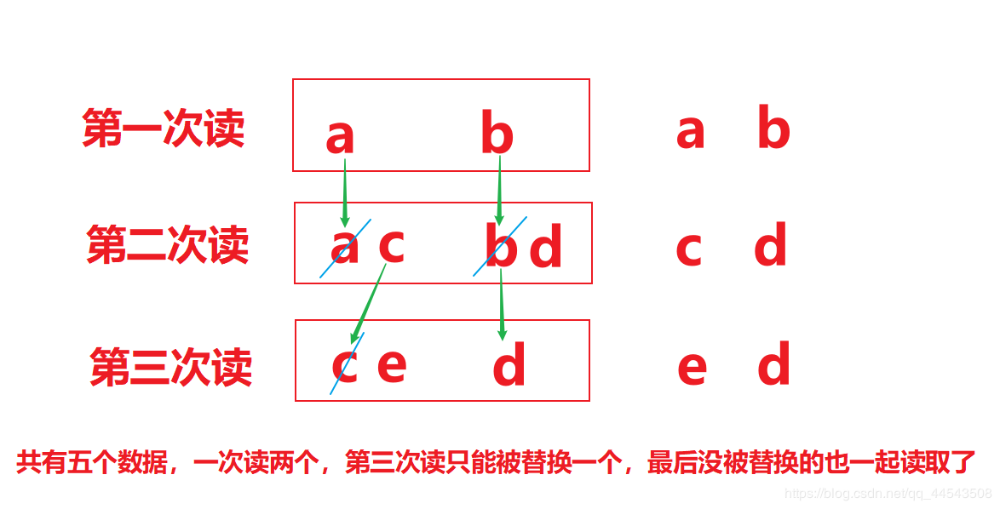
代码如下：
public class FISRead {
public static void main(String[] args) throws IOException{
// 使用文件名称创建流对象.
FileInputStream fis = new FileInputStream("read.txt"); // 文件中为abcde
// 定义变量，作为有效个数
int len ；
// 定义字节数组，作为装字节数据的容器
byte[] b = new byte[2];
// 循环读取
while (( len= fis.read(b))!=-1) {
// 每次读取后,把数组的有效字节部分，变成字符串打印
System.out.println(new String(b，0，len));// len 每次读取的有效字节个数
}
// 关闭资源
fis.close();
}
}
输出结果：
ab
cd
e在开发中一般强烈推荐使用数组读取文件，代码如下：
package io;
import java.io.FileInputStream;
import java.io.FileNotFoundException;
import java.io.IOException;
public class input2 {
public static void main(String args[]){
FileInputStream inputStream = null;
try {
inputStream = new FileInputStream("a.txt");
int len = 0 ;
byte[] bys = new byte[1024];
while ((len = inputStream.read(bys)) != -1) {
System.out.println(new String(bys,0,len));
}
} catch (IOException e) {
e.printStackTrace();
}finally {
try {
inputStream.close();
} catch (IOException e) {
e.printStackTrace();
}
}
}
}字节流FileInputstream复制图片
复制图片原理
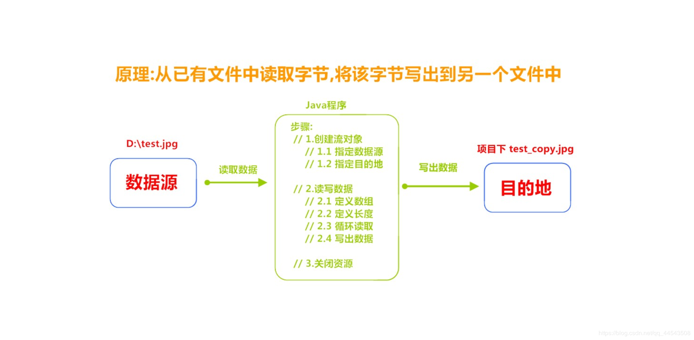
代码实现
复制图片文件，代码如下：
public class Copy {
public static void main(String[] args) throws IOException {
// 1.创建流对象
// 1.1 指定数据源
FileInputStream fis = new FileInputStream("D:\\test.jpg");
// 1.2 指定目的地
FileOutputStream fos = new FileOutputStream("test_copy.jpg");
// 2.读写数据
// 2.1 定义数组
byte[] b = new byte[1024];
// 2.2 定义长度
int len;
// 2.3 循环读取
while ((len = fis.read(b))!=-1) {
// 2.4 写出数据
fos.write(b, 0 , len);
}
// 3.关闭资源
fos.close();
fis.close();
}
}注：复制文本、图片、mp3、视频等的方式一样。
到这里，已经从File类讲到了字节流OutputStream与InputStream，而现在将主要从字符流Reader和Writer的故事开展。
字符流Reader和Writer的故事
字符流Reader和Writer的故事从它们的继承图开始，啥都不说了，直接看图
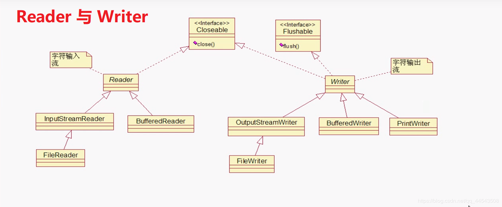
字符流
字符流的由来：因为数据编码的不同，因而有了对字符进行高效操作的流对象，字符流本质其实就是基于字节流读取时，去查了指定的码表，而字节流直接读取数据会有乱码的问题（读中文会乱码），这个时候小白同学就看不懂了，没事，咋们先来看个程序：
package IO;
import java.io.FileInputStream;
import java.io.FileNotFoundException;
import java.io.FileOutputStream;
public class CharaterStream {
public static void main(String[] args) throws Exception {
//FileInputStream为操作文件的字符输入流
FileInputStream inputStream = new FileInputStream("a.txt");//内容为哥敢摸屎
int len;
while ((len=inputStream.read())!=-1){
System.out.print((char)len);
}
}
}
运行结果： ??￥??￠????±具体现状分析
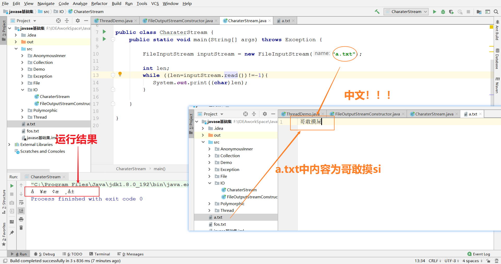
话说，就是你哥我敢摸si,那你哥我肯定也不认识这玩意啊： ??￥??￠????±
字节流读取中文字符时，可能不会显示完整的字符，那是因为一个中文字符占用多个字节存储。
那字节流就没办法了吗？不，字节流依旧有办法，只是麻烦了点，代码如下：
public class CharaterStream {
public static void main(String[] args) throws Exception {
FileInputStream inputStream = new FileInputStream("a.txt");
byte[] bytes = new byte[1024];
int len;
while ((len=inputStream.read(bytes))!=-1){
System.out.print(new String(bytes,0,len));
}
}
}
运行结果： 哥敢摸屎这是为啥呢？没错解码的正是String，查看new String()的源码，String构造方法有解码功能，并且默认编码是utf-8，代码如下：
this.value = StringCoding.decode(bytes, offset, length);
再点进decode，循序渐进发现，默认编码是UTF-8尽管字节流也能有办法决绝乱码问题，但是还是比较麻烦，于是java就有了字符流，字符为单位读写数据，字符流专门用于处理文本文件。如果处理纯文本的数据优先考虑字符流，其他情况就只能用字节流了（图片、视频、等等只文本例外）。
从另一角度来说：字符流 = 字节流 + 编码表
1、 字符输入流（Reader）
java.io.Reader抽象类是字符输入流的所有类的超类（父类），可以读取字符信息到内存中。它定义了字符输入流的基本共性功能方法。
字符输入流的共性方法：
1、
public void close()：关闭此流并释放与此流相关联的任何系统资源。
2、public int read()： 从输入流读取一个字符。
3、public int read(char[] cbuf)： 从输入流中读取一些字符，并将它们存储到字符数组cbuf中
FileReader类
java.io.FileReader类是读取字符文件的便利类。构造时使用系统默认的字符编码和默认字节缓冲区。
构造方法
1、
FileReader(File file)： 创建一个新的 FileReader ，给定要读取的File对象。
2、FileReader(String fileName)： 创建一个新的 FileReader ，给定要读取的文件的字符串名称。
构造方法的使用就算不写应该都很熟悉了吧，代码如下：
public class FileReaderConstructor throws IOException{
public static void main(String[] args) {
// 使用File对象创建流对象
File file = new File("a.txt");
FileReader fr = new FileReader(file);
// 使用文件名称创建流对象
FileReader fr = new FileReader("b.txt");
}
}FileReader读取字符数据
- 读取字符：
read方法，每次可以读取一个字符的数据，提升为int类型，读取到文件末尾，返回-1，循环读取，代码使用演示：
public class FRRead {
public static void main(String[] args) throws IOException {
// 使用文件名称创建流对象
FileReader fr = new FileReader("a.txt");
// 定义变量，保存数据
int b ；
// 循环读取
while ((b = fr.read())!=-1) {
System.out.println((char)b);
}
// 关闭资源
fr.close();
}
}至于读取的写法类似字节流的写法，只是读取单位不同罢了。
2、字符输出流（Writer）
java.io.Writer抽象类是字符输出流的所有类的超类（父类），将指定的字符信息写出到目的地。它同样定义了字符输出流的基本共性功能方法。
字符输出流的基本共性功能方法：
1、
void write(int c)写入单个字符。
2、void write(char[] cbuf)写入字符数组。
3、abstract void write(char[] cbuf, int off, int len)写入字符数组的某一部分,off数组的开始索引,len写的字符个数。
4、void write(String str)写入字符串。
5、void write(String str, int off, int len)写入字符串的某一部分,off字符串的开始索引,len写的字符个数。
6、void flush()刷新该流的缓冲。
7、void close()关闭此流，但要先刷新它。
FileWriter类
java.io.FileWriter类是写出字符到文件的便利类。构造时使用系统默认的字符编码和默认字节缓冲区。
构造方法
1、 FileWriter(File file)： 创建一个新的 FileWriter，给定要读取的File对象。
2、FileWriter(String fileName)： 创建一个新的 FileWriter，给定要读取的文件的名称。
依旧是熟悉的构造举例，代码如下：
public class FileWriterConstructor {
public static void main(String[] args) throws IOException {
// 第一种：使用File对象创建流对象
File file = new File("a.txt");
FileWriter fw = new FileWriter(file);
// 第二种：使用文件名称创建流对象
FileWriter fw = new FileWriter("b.txt");
}
}FileWriter写出数据
写出字符：write(int b) 方法，每次可以写出一个字符数据，代码使用演示：
public class FWWrite {
public static void main(String[] args) throws IOException {
// 使用文件名称创建流对象
FileWriter fw = new FileWriter("fw.txt");
// 写出数据
fw.write(97); // 写出第1个字符
fw.write('b'); // 写出第2个字符
fw.write('C'); // 写出第3个字符
//关闭资源时,与FileOutputStream不同。 如果不关闭,数据只是保存到缓冲区，并未保存到文件。
// fw.close();
}
}
输出结果：
abC【注意】关闭资源时,与FileOutputStream不同。 如果不关闭,数据只是保存到缓冲区，并未保存到文件。
关闭close和刷新flush
因为内置缓冲区的原因，如果不关闭输出流，无法写出字符到文件中。但是关闭的流对象，是无法继续写出数据的。如果我们既想写出数据，又想继续使用流，就需要flush 方法了。
flush ：刷新缓冲区，流对象可以继续使用。
close:先刷新缓冲区，然后通知系统释放资源。流对象不可以再被使用了。
flush还是比较有趣的，童鞋们不自己运行一下还真不好体会，现在博主就写个程序让你体会体会：
字符流
public class FlushDemo {
public static void main(String[] args) throws Exception {
//源 也就是输入流【读取流】 读取a.txt文件
FileReader fr=new FileReader("a.txt"); //必须要存在a.txt文件，否则报FileNotFoundException异常
//目的地 也就是输出流
FileWriter fw=new FileWriter("b.txt"); //系统会自动创建b.txt，因为它是输出流！
int len;
while((len=fr.read())!=-1){
fw.write(len);
}
注意这里是没有使用close关闭流，开发中不能这样做，但是为了更好的体会flush的作用
}
}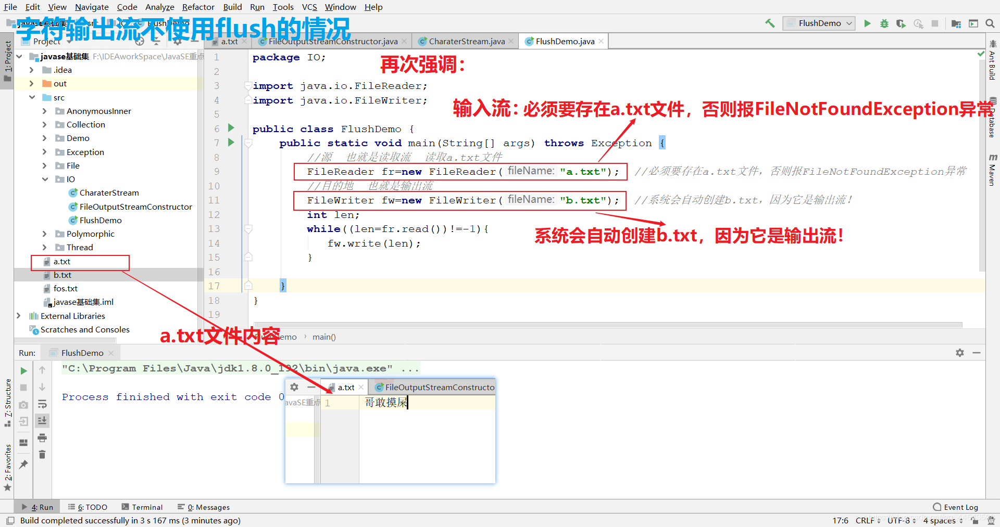
运行效果是怎么样的呢？答案是b.txt文件中依旧是空的，是的并没有任何东西，为啥呢？熊dei啊，我在上面就用红色字体特别标注过了，就是这句话： 【注意】关闭资源时,与FileOutputStream不同。 如果不关闭,数据只是保存到缓冲区，并未保存到文件。这个时候反应过来了吧，可见实践例子的重要性，编程就是这样，不去敲，永远学不会！！！所以一定要去敲，博主没敲过10万行代码真的没有脸出去说自己是学java的。所以，大家一定要多思考，多敲啊！！！
所以，我们在以上的代码中再添加下面三句代码，就完美了，b.txt文件就能复制到源文件的数据了！
fr.close();
fw.flush();
fw.close();
flush()这个函数是清空的意思，用于清空缓冲区的数据流，进行流的操作时，数据先被读到内存中，然后再用数据写到文件中，那么当你数据读完时，我们如果这时调用close()方法关闭读写流，这时就可能造成数据丢失，为什么呢？因为，读入数据完成时不代表写入数据完成，一部分数据可能会留在缓存区中，这个时候flush()方法就格外重要了。
好了，接下来close使用代码如下：
public class FWWrite {
public static void main(String[] args) throws IOException {
// 使用文件名称创建流对象
FileWriter fw = new FileWriter("fw.txt");
// 写出数据，通过flush
fw.write('刷'); // 写出第1个字符
fw.flush();
fw.write('新'); // 继续写出第2个字符，写出成功
fw.flush();
// 写出数据，通过close
fw.write('关'); // 写出第1个字符
fw.close();
fw.write('闭'); // 继续写出第2个字符,【报错】java.io.IOException: Stream closed
fw.close();
}
}即便是flush方法写出了数据，操作的最后还是要调用close方法，释放系统资源。
FileWriter的续写和换行
续写和换行：操作类似于FileOutputStream操作（上一篇博客讲到过），直接上代码：
public class FWWrite {
public static void main(String[] args) throws IOException {
// 使用文件名称创建流对象，可以续写数据
FileWriter fw = new FileWriter("fw.txt"，true);
// 写出字符串
fw.write("哥敢");
// 写出换行
fw.write("\r\n");
// 写出字符串
fw.write("摸屎");
// 关闭资源
fw.close();
}
}
输出结果:
哥敢
摸屎FileReader和FileWriter类完成文本文件复制
直接上代码：
import java.io.FileReader;
import java.io.FileWriter;
import java.io.IOException;
public class CopyFile {
public static void main(String[] args) throws IOException {
//创建输入流对象
FileReader fr=new FileReader("F:\\新建文件夹\\aa.txt");//文件不存在会抛出java.io.FileNotFoundException
//创建输出流对象
FileWriter fw=new FileWriter("C:\\copyaa.txt");
/*创建输出流做的工作：
* 1、调用系统资源创建了一个文件
* 2、创建输出流对象
* 3、把输出流对象指向文件
* */
//文本文件复制，一次读一个字符
copyMethod1(fr, fw);
//文本文件复制，一次读一个字符数组
copyMethod2(fr, fw);
fr.close();
fw.close();
}
public static void copyMethod1(FileReader fr, FileWriter fw) throws IOException {
int ch;
while((ch=fr.read())!=-1) {//读数据
fw.write(ch);//写数据
}
fw.flush();
}
public static void copyMethod2(FileReader fr, FileWriter fw) throws IOException {
char chs[]=new char[1024];
int len=0;
while((len=fr.read(chs))!=-1) {//读数据
fw.write(chs,0,len);//写数据
}
fw.flush();
}
}
CopyFile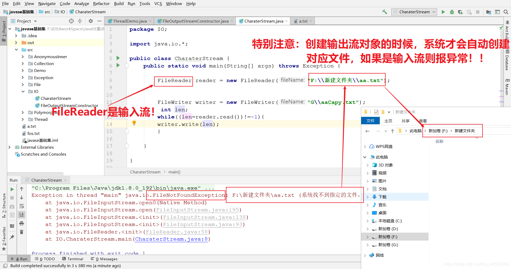
最后再次强调：
字符流，只能操作文本文件，不能操作图片，视频等非文本文件。当我们单纯读或者写文本文件时 使用字符流 其他情况使用字节流
IO异常的处理
我们在学习的过程中可能习惯把异常抛出，而实际开发中并不能这样处理，建议使用try...catch...finally 代码块，处理异常部分，格式代码如下：
public class HandleException1 {
public static void main(String[] args) {
// 声明变量
FileWriter fw = null;
try {
//创建流对象
fw = new FileWriter("fw.txt");
// 写出数据
fw.write("哥敢摸si"); //哥敢摸si
} catch (IOException e) {
e.printStackTrace();
} finally {
try {
if (fw != null) {
fw.close();
}
} catch (IOException e) {
e.printStackTrace();
}
}
}
}如果对异常不是特别熟练的童鞋可以参考这篇文章【java基础之异常】死了都要try，不淋漓尽致地catch我不痛快！
好了，到这里，字符流Reader和Writer的故事的到这里了！
前面主要写了一些基本的流作为IO流的入门。从这里开始将要见识一些更强大的流。比如能够高效读写的缓冲流，能够转换编码的转换流，能够持久化存储对象的序列化流等等，而这些强大的流都是在基本的流对象基础之上而来的！这些强大的流将伴随着我们今后的开发！
1、缓冲流【掌握】
1.1 简要概述
首先我们来认识认识一下缓冲流,也叫高效流，是对4个FileXxx 流的“增强流”。
缓冲流的基本原理：
1、使用了底层流对象从具体设备上获取数据，并将数据存储到缓冲区的数组内。
2、通过缓冲区的read()方法从缓冲区获取具体的字符数据，这样就提高了效率。
3、如果用read方法读取字符数据，并存储到另一个容器中，直到读取到了换行符时，将另一个容器临时存储的数据转成字符串返回，就形成了readLine()功能。
也就是说在创建流对象时，会创建一个内置的默认大小的缓冲区数组，通过缓冲区读写，减少系统IO次数，从而提高读写的效率。
缓冲书写格式为BufferedXxx，按照数据类型分类：
- 字节缓冲流：
BufferedInputStream，BufferedOutputStream - 字符缓冲流：
BufferedReader，BufferedWriter
1.2 字节缓冲流
构造方法
public BufferedInputStream(InputStream in)：创建一个新的缓冲输入流，注意参数类型为InputStream。public BufferedOutputStream(OutputStream out)： 创建一个新的缓冲输出流，注意参数类型为OutputStream。
构造举例代码如下：
//构造方式一： 创建字节缓冲输入流【但是开发中一般常用下面的格式申明】
FileInputStream fps = new FileInputStream(b.txt);
BufferedInputStream bis = new BufferedInputStream(fps)
//构造方式一： 创建字节缓冲输入流
BufferedInputStream bis = new BufferedInputStream(new FileInputStream("b.txt"));
///构造方式二： 创建字节缓冲输出流
BufferedOutputStream bos = new BufferedOutputStream(new FileOutputStream("b.txt"));感受缓冲流的高效
缓冲流读写方法与基本的流是一致的，我们通过复制370多MB的大文件，测试它的效率。
- 基本流，代码如下：
public class BufferedDemo {
public static void main(String[] args) throws FileNotFoundException {
// 记录开始时间
long start = System.currentTimeMillis();
// 创建流对象
try (
FileInputStream fis = new FileInputStream("py.exe");//exe文件够大
FileOutputStream fos = new FileOutputStream("copyPy.exe")
){
// 读写数据
int b;
while ((b = fis.read()) != -1) {
fos.write(b);
}
} catch (IOException e) {
e.printStackTrace();
}
// 记录结束时间
long end = System.currentTimeMillis();
System.out.println("普通流复制时间:"+(end - start)+" 毫秒");
}
}
不好意思十分钟过去了还在玩命复制中...- 缓冲流，代码如下：
public class BufferedDemo {
public static void main(String[] args) throws FileNotFoundException {
// 记录开始时间
long start = System.currentTimeMillis();
// 创建流对象
try (
BufferedInputStream bis = new BufferedInputStream(new FileInputStream("py.exe"));
BufferedOutputStream bos = new BufferedOutputStream(new FileOutputStream("copyPy.exe"));
){
// 读写数据
int b;
while ((b = bis.read()) != -1) {
bos.write(b);
}
} catch (IOException e) {
e.printStackTrace();
}
// 记录结束时间
long end = System.currentTimeMillis();
System.out.println("缓冲流复制时间:"+(end - start)+" 毫秒");
}
}
缓冲流复制时间:8016 毫秒有的童鞋就要说了，我要更快的速度！最近看速度与激情7有点上头，能不能再快些？答案是当然可以
想要更快可以使用数组的方式，代码如下：
public class BufferedDemo {
public static void main(String[] args) throws FileNotFoundException {
// 记录开始时间
long start = System.currentTimeMillis();
// 创建流对象
try (
BufferedInputStream bis = new BufferedInputStream(new FileInputStream("py.exe"));
BufferedOutputStream bos = new BufferedOutputStream(new FileOutputStream("copyPy.exe"));
){
// 读写数据
int len;
byte[] bytes = new byte[8*1024];
while ((len = bis.read(bytes)) != -1) {
bos.write(bytes, 0 , len);
}
} catch (IOException e) {
e.printStackTrace();
}
// 记录结束时间
long end = System.currentTimeMillis();
System.out.println("缓冲流使用数组复制时间:"+(end - start)+" 毫秒");
}
}
缓冲流使用数组复制时间:521 毫秒 1.3 字符缓冲流
构造方法
相同的来看看其构造，其格式以及原理和字节缓冲流是一样一样的！
public BufferedReader(Reader in)：创建一个新的缓冲输入流，注意参数类型为Reader。public BufferedWriter(Writer out)： 创建一个新的缓冲输出流，注意参数类型为Writer。
构造举例，代码如下：
// 创建字符缓冲输入流
BufferedReader br = new BufferedReader(new FileReader("b.txt"));
// 创建字符缓冲输出流
BufferedWriter bw = new BufferedWriter(new FileWriter("b.txt"));字符缓冲流特有方法
字符缓冲流的基本方法与普通字符流调用方式一致，这里不再阐述，我们来看字符缓冲流具备的特有方法。
- BufferedReader：
public String readLine(): 读一行数据。 读取到最后返回null - BufferedWriter：
public void newLine(): 换行,由系统属性定义符号。
readLine方法演示代码如下：
public class BufferedReaderDemo {
public static void main(String[] args) throws IOException {
// 创建流对象
BufferedReader br = new BufferedReader(new FileReader("a.txt"));
// 定义字符串,保存读取的一行文字
String line = null;
// 循环读取,读取到最后返回null
while ((line = br.readLine())!=null) {
System.out.print(line);
System.out.println("------");
}
// 释放资源
br.close();
}
}newLine方法演示代码如下：
public class BufferedWriterDemo throws IOException {
public static void main(String[] args) throws IOException {
// 创建流对象
BufferedWriter bw = new BufferedWriter(new FileWriter("b.txt"));
// 写出数据
bw.write("哥");
// 写出换行
bw.newLine();
bw.write("敢");
bw.newLine();
bw.write("摸屎");
bw.newLine();
bw.write("你敢吗？");
bw.newLine();
// 释放资源
bw.close();
}
}
输出效果:
哥
敢
摸屎
你敢吗？1.4 字符缓冲流练习
字符缓冲流练习啥捏？先放松一下吧各位，先欣赏欣赏我写的下面的诗篇
6.你说你的程序叫简单，我说我的代码叫诗篇
1.一想到你我就哦豁豁豁豁豁豁豁豁豁豁....哦nima个头啊，完全不理人家受得了受不了
8.Just 简单你和我 ，Just 简单程序员
3.约了地点却忘了见面 ，懂得寂寞才明白浩瀚
5.沉默是最大的发言权
2.总是喜欢坐在电脑前， 总是喜欢工作到很晚
7.向左走 又向右走，我们转了好多的弯
4.你从来就不问我，你还是不是那个程序员
欣赏完了咩？没错咋们就练习如何使用缓冲流的技术把上面的诗篇归顺序，都编过号了~就是前面的1到8的编号~
分析：首先用字符输入缓冲流创建个源，里面放没有排过序的文字，之后用字符输出缓冲流创建个目标接收，排序的过程就要自己写方法了哦，可以从每条诗词的共同点“.”符号下手！
代码实现
public class BufferedTest {
public static void main(String[] args) throws IOException {
// 创建map集合,保存文本数据,键为序号,值为文字
HashMap<String, String> lineMap = new HashMap<>();
// 创建流对象 源
BufferedReader br = new BufferedReader(new FileReader("a.txt"));
//目标
BufferedWriter bw = new BufferedWriter(new FileWriter("b.txt"));
// 读取数据
String line = null;
while ((line = br.readLine())!=null) {
// 解析文本
String[] split = line.split("\\.");
// 保存到集合
lineMap.put(split[0],split[1]);
}
// 释放资源
br.close();
// 遍历map集合
for (int i = 1; i <= lineMap.size(); i++) {
String key = String.valueOf(i);
// 获取map中文本
String value = lineMap.get(key);
// 写出拼接文本
bw.write(key+"."+value);
// 写出换行
bw.newLine();
}
// 释放资源
bw.close();
}
}运行效果
1.一想到你我就哦豁豁豁豁豁豁豁豁豁豁…哦nima个头啊，完全不理人家受得了受不了
2.总是喜欢坐在电脑前， 总是喜欢工作到很晚
3.约了地点却忘了见面 ，懂得寂寞才明白浩瀚
4.你从来就不问我，你还是不是那个程序员
5.沉默是最大的发言权
6.你说你的程序叫简单，我说我的代码叫诗篇
7.向左走 又向右走，我们转了好多的弯
8.Just 简单你和我 ，Just 简单程序员2、转换流【掌握】
何谓转换流？为何由来？暂时带着问题让我们先来了解了解字符编码和字符集！
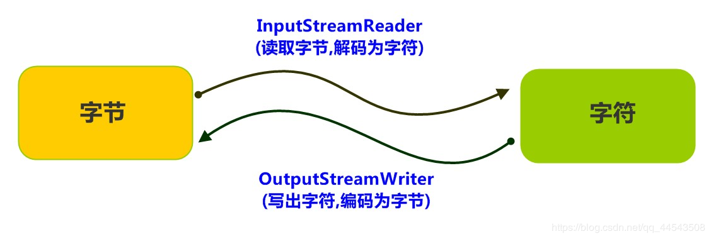
2.1 字符编码与解码
众所周知，计算机中储存的信息都是用二进制数表示的，而我们在屏幕上看到的数字、英文、标点符号、汉字等字符是二进制数转换之后的结果。按照某种规则，将字符存储到计算机中，称为编码 。反之，将存储在计算机中的二进制数按照某种规则解析显示出来，称为解码 。比如说，按照A规则存储，同样按照A规则解析，那么就能显示正确的文本符号。反之，按照A规则存储，再按照B规则解析，就会导致乱码现象。
简单一点的说就是：
编码:字符(能看懂的)--字节(看不懂的)
解码:字节(看不懂的)-->字符(能看懂的)
代码解释则是
String(byte[] bytes, String charsetName):通过指定的字符集解码字节数组
byte[] getBytes(String charsetName):使用指定的字符集合把字符串编码为字节数组
编码:把看得懂的变成看不懂的
String -- byte[]
解码:把看不懂的变成看得懂的
byte[] -- String字符编码
Character Encoding: 就是一套自然语言的字符与二进制数之间的对应规则。而编码表则是生活中文字和计算机中二进制的对应规则
字符集
- 字符集
Charset：也叫编码表。是一个系统支持的所有字符的集合，包括各国家文字、标点符号、图形符号、数字等。
计算机要准确的存储和识别各种字符集符号，需要进行字符编码，一套字符集必然至少有一套字符编码。常见字符集有ASCII字符集、GBK字符集、Unicode字符集等。
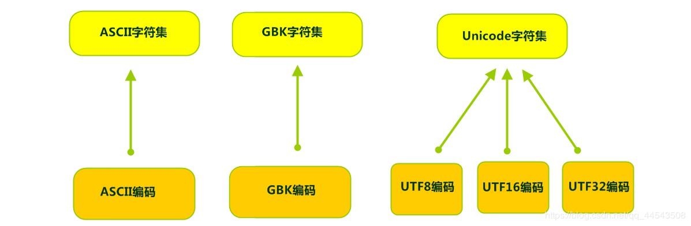
可见，当指定了编码，它所对应的字符集自然就指定了，所以编码才是我们最终要关心的。
- ASCII字符集 ：
- ASCII（American Standard Code for Information Interchange，美国信息交换标准代码）是基于拉丁字母的一套电脑编码系统，用于显示现代英语，主要包括控制字符（回车键、退格、换行键等）和可显示字符（英文大小写字符、阿拉伯数字和西文符号）。
- 基本的ASCII字符集，使用7位（bits）表示一个字符，共128字符。ASCII的扩展字符集使用8位（bits）表示一个字符，共256字符，方便支持欧洲常用字符。
- ISO-8859-1字符集：
- 拉丁码表，别名Latin-1，用于显示欧洲使用的语言，包括荷兰、丹麦、德语、意大利语、西班牙语等。
- ISO-8859-1使用单字节编码，兼容ASCII编码。
- GBxxx字符集：
- GB就是国标的意思，是为了显示中文而设计的一套字符集。
- GB2312：简体中文码表。一个小于127的字符的意义与原来相同。但两个大于127的字符连在一起时，就表示一个汉字，这样大约可以组合了包含7000多个简体汉字，此外数学符号、罗马希腊的字母、日文的假名们都编进去了，连在ASCII里本来就有的数字、标点、字母都统统重新编了两个字节长的编码，这就是常说的"全角"字符，而原来在127号以下的那些就叫"半角"字符了。
- GBK：最常用的中文码表。是在GB2312标准基础上的扩展规范，使用了双字节编码方案，共收录了21003个汉字，完全兼容GB2312标准，同时支持繁体汉字以及日韩汉字等。
- GB18030：最新的中文码表。收录汉字70244个，采用多字节编码，每个字可以由1个、2个或4个字节组成。支持中国国内少数民族的文字，同时支持繁体汉字以及日韩汉字等。
- Unicode字符集 ：
- Unicode编码系统为表达任意语言的任意字符而设计，是业界的一种标准，也称为统一码、标准万国码。
- 它最多使用4个字节的数字来表达每个字母、符号，或者文字。有三种编码方案，UTF-8、UTF-16和UTF-32。最为常用的UTF-8编码。
- UTF-8编码，可以用来表示Unicode标准中任何字符，它是电子邮件、网页及其他存储或传送文字的应用中，优先采用的编码。互联网工程工作小组（IETF）要求所有互联网协议都必须支持UTF-8编码。所以，我们开发Web应用，也要使用UTF-8编码。它使用一至四个字节为每个字符编码，编码规则：
- 128个US-ASCII字符，只需一个字节编码。
- 拉丁文等字符，需要二个字节编码。
- 大部分常用字（含中文），使用三个字节编码。
- 其他极少使用的Unicode辅助字符，使用四字节编码。
2.2 编码问题导致乱码
在java开发工具IDEA中，使用FileReader 读取项目中的文本文件。由于IDEA的设置，都是默认的UTF-8编码，所以没有任何问题。但是，当读取Windows系统中创建的文本文件时，由于Windows系统的默认是GBK编码，就会出现乱码。
public class ReaderDemo {
public static void main(String[] args) throws IOException {
FileReader fileReader = new FileReader("C:\\a.txt");
int read;
while ((read = fileReader.read()) != -1) {
System.out.print((char)read);
}
fileReader.close();
}
}
输出结果：���那么如何读取GBK编码的文件呢？ 这个时候就得讲讲转换流了！
从另一角度来讲：字符流=字节流+编码表
2.3 InputStreamReader类-----(字节流到字符流的桥梁)
转换流java.io.InputStreamReader，是Reader的子类，从字面意思可以看出它是从字节流到字符流的桥梁。它读取字节，并使用指定的字符集将其解码为字符。它的字符集可以由名称指定，也可以接受平台的默认字符集。
构造方法
InputStreamReader(InputStream in): 创建一个使用默认字符集的字符流。
InputStreamReader(InputStream in, String charsetName): 创建一个指定字符集的字符流。
构造代码如下：
InputStreamReader isr = new InputStreamReader(new FileInputStream("in.txt"));
InputStreamReader isr2 = new InputStreamReader(new FileInputStream("in.txt") , "GBK");使用转换流解决编码问题
public class ReaderDemo2 {
public static void main(String[] args) throws IOException {
// 定义文件路径,文件为gbk编码
String FileName = "C:\\A.txt";
// 创建流对象,默认UTF8编码
InputStreamReader isr = new InputStreamReader(new FileInputStream(FileName));
// 创建流对象,指定GBK编码
InputStreamReader isr2 = new InputStreamReader(new FileInputStream(FileName) , "GBK");
// 定义变量,保存字符
int read;
// 使用默认编码字符流读取,乱码
while ((read = isr.read()) != -1) {
System.out.print((char)read); // �����ʺ
}
isr.close();
// 使用指定编码字符流读取,正常解析
while ((read = isr2.read()) != -1) {
System.out.print((char)read);// 哥敢摸屎
}
isr2.close();
}
}2.4 OutputStreamWriter类-----(字符流到字节流的桥梁)
转换流java.io.OutputStreamWriter ，是Writer的子类，字面看容易混淆会误以为是转为字符流，其实不然，OutputStreamWriter为从字符流到字节流的桥梁。使用指定的字符集将字符编码为字节。它的字符集可以由名称指定，也可以接受平台的默认字符集。
构造方法
OutputStreamWriter(OutputStream in): 创建一个使用默认字符集的字符流。
OutputStreamWriter(OutputStream in, String charsetName): 创建一个指定字符集的字符流。
构造举例，代码如下：
OutputStreamWriter isr = new OutputStreamWriter(new FileOutputStream("a.txt"));
OutputStreamWriter isr2 = new OutputStreamWriter(new FileOutputStream("b.txt") , "GBK");指定编码构造代码
public class OutputDemo {
public static void main(String[] args) throws IOException {
// 定义文件路径
String FileName = "C:\\s.txt";
// 创建流对象,默认UTF8编码
OutputStreamWriter osw = new OutputStreamWriter(new FileOutputStream(FileName));
// 写出数据
osw.write("哥敢"); // 保存为6个字节
osw.close();
// 定义文件路径
String FileName2 = "D:\\A.txt";
// 创建流对象,指定GBK编码
OutputStreamWriter osw2 = new OutputStreamWriter(new FileOutputStream(FileName2),"GBK");
// 写出数据
osw2.write("摸屎");// 保存为4个字节
osw2.close();
}
}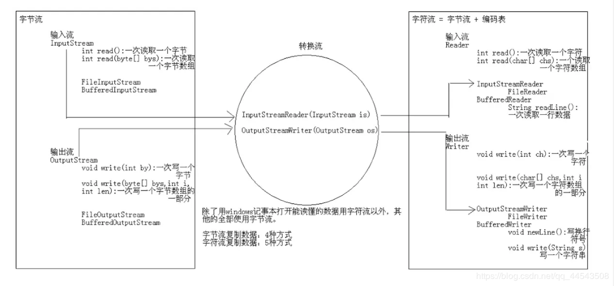
为了达到最高效率，可以考虑在 BufferedReader 内包装 InputStreamReader
BufferedReader in = new BufferedReader(new InputStreamReader(System.in))；3、序列化流【理解】
(1)可以把对象写入文本文件或者在网络中传输
(2)如何实现序列化呢?
让被序列化的对象所属类实现序列化接口。
该接口是一个标记接口。没有功能需要实现。
(3)注意问题：
把数据写到文件后，在去修改类会产生一个问题。
如何解决该问题呢?
在类文件中，给出一个固定的序列化id值。
而且，这样也可以解决黄色警告线问题
(4)面试题：
什么时候序列化?
如何实现序列化?
什么是反序列化?
3.1 何谓序列化
Java 提供了一种对象序列化的机制。用一个字节序列可以表示一个对象，该字节序列包含该对象的数据、对象的类型和对象中存储的属性等信息。字节序列写出到文件之后，相当于文件中持久保存了一个对象的信息。
反之，该字节序列还可以从文件中读取回来，重构对象，对它进行反序列化。对象的数据、对象的类型和对象中存储的数据信息，都可以用来在内存中创建对象。看图理解序列化：
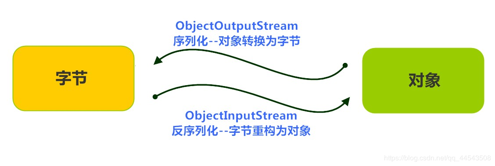
3.2 ObjectOutputStream类
java.io.ObjectOutputStream 类，将Java对象的原始数据类型写出到文件,实现对象的持久存储。
构造方法
public ObjectOutputStream(OutputStream out)： 创建一个指定OutputStream的ObjectOutputStream。
构造代码如下：
FileOutputStream fileOut = new FileOutputStream("aa.txt");
ObjectOutputStream out = new ObjectOutputStream(fileOut);序列化操作
- 一个对象要想序列化，必须满足两个条件:
该类必须实现java.io.Serializable 接口，Serializable 是一个标记接口，不实现此接口的类将不会使任何状态序列化或反序列化，会抛出NotSerializableException 。
该类的所有属性必须是可序列化的。如果有一个属性不需要可序列化的，则该属性必须注明是瞬态的，使用transient 关键字修饰。
public class Employee implements java.io.Serializable {
public String name;
public String address;
public transient int age; // transient瞬态修饰成员,不会被序列化
public void addressCheck() {
System.out.println("Address check : " + name + " -- " + address);
}
}2.写出对象方法
public final void writeObject (Object obj) : 将指定的对象写出。
public class SerializeDemo{
public static void main(String [] args) {
Employee e = new Employee();
e.name = "zhangsan";
e.address = "beiqinglu";
e.age = 20;
try {
// 创建序列化流对象
ObjectOutputStream out = new ObjectOutputStream(new FileOutputStream("employee.txt"));
// 写出对象
out.writeObject(e);
// 释放资源
out.close();
fileOut.close();
System.out.println("Serialized data is saved"); // 姓名，地址被序列化，年龄没有被序列化。
} catch(IOException i) {
i.printStackTrace();
}
}
}
输出结果：
Serialized data is saved3.3 ObjectInputStream类
ObjectInputStream反序列化流，将之前使用ObjectOutputStream序列化的原始数据恢复为对象。
构造方法
public ObjectInputStream(InputStream in)： 创建一个指定InputStream的ObjectInputStream。
反序列化操作1
如果能找到一个对象的class文件，我们可以进行反序列化操作，调用ObjectInputStream读取对象的方法：
public final Object readObject (): 读取一个对象。
public class DeserializeDemo {
public static void main(String [] args) {
Employee e = null;
try {
// 创建反序列化流
FileInputStream fileIn = new FileInputStream("employee.txt");
ObjectInputStream in = new ObjectInputStream(fileIn);
// 读取一个对象
e = (Employee) in.readObject();
// 释放资源
in.close();
fileIn.close();
}catch(IOException i) {
// 捕获其他异常
i.printStackTrace();
return;
}catch(ClassNotFoundException c) {
// 捕获类找不到异常
System.out.println("Employee class not found");
c.printStackTrace();
return;
}
// 无异常,直接打印输出
System.out.println("Name: " + e.name); // zhangsan
System.out.println("Address: " + e.address); // beiqinglu
System.out.println("age: " + e.age); // 0
}
}对于JVM可以反序列化对象，它必须是能够找到class文件的类。如果找不到该类的class文件，则抛出一个 ClassNotFoundException 异常。
反序列化操作2
另外，当JVM反序列化对象时，能找到class文件，但是class文件在序列化对象之后发生了修改，那么反序列化操作也会失败，抛出一个InvalidClassException异常。发生这个异常的原因如下：
1、该类的序列版本号与从流中读取的类描述符的版本号不匹配
2、该类包含未知数据类型
2、该类没有可访问的无参数构造方法
Serializable 接口给需要序列化的类，提供了一个序列版本号。serialVersionUID 该版本号的目的在于验证序列化的对象和对应类是否版本匹配。
public class Employee implements java.io.Serializable {
// 加入序列版本号
private static final long serialVersionUID = 1L;
public String name;
public String address;
// 添加新的属性 ,重新编译, 可以反序列化,该属性赋为默认值.
public int eid;
public void addressCheck() {
System.out.println("Address check : " + name + " -- " + address);
}
}3.4 序列化集合练习
- 将存有多个自定义对象的集合序列化操作，保存到
list.txt文件中。 - 反序列化
list.txt，并遍历集合，打印对象信息。
案例分析
- 把若干学生对象 ，保存到集合中。
- 把集合序列化。
- 反序列化读取时，只需要读取一次，转换为集合类型。
- 遍历集合，可以打印所有的学生信息
案例代码实现
public class SerTest {
public static void main(String[] args) throws Exception {
// 创建 学生对象
Student student = new Student("老王", "laow");
Student student2 = new Student("老张", "laoz");
Student student3 = new Student("老李", "laol");
ArrayList<Student> arrayList = new ArrayList<>();
arrayList.add(student);
arrayList.add(student2);
arrayList.add(student3);
// 序列化操作
// serializ(arrayList);
// 反序列化
ObjectInputStream ois = new ObjectInputStream(new FileInputStream("list.txt"));
// 读取对象,强转为ArrayList类型
ArrayList<Student> list = (ArrayList<Student>)ois.readObject();
for (int i = 0; i < list.size(); i++ ){
Student s = list.get(i);
System.out.println(s.getName()+"--"+ s.getPwd());
}
}
private static void serializ(ArrayList<Student> arrayList) throws Exception {
// 创建 序列化流
ObjectOutputStream oos = new ObjectOutputStream(new FileOutputStream("list.txt"));
// 写出对象
oos.writeObject(arrayList);
// 释放资源
oos.close();
}
}4、打印流【掌握】
4.1 何谓打印流
平时我们在控制台打印输出，是调用print方法和println方法完成的，各位用了这么久的输出语句肯定没想过这两个方法都来自于java.io.PrintStream类吧，哈哈。该类能够方便地打印各种数据类型的值，是一种便捷的输出方式。
打印流分类：
字节打印流PrintStream，字符打印流PrintWriter
打印流特点：
A:只操作目的地,不操作数据源
B:可以操作任意类型的数据
C:如果启用了自动刷新，在调用println()方法的时候，能够换行并刷新
D:可以直接操作文件
这个时候有同学就要问了，哪些流可以直接操作文件呢?答案很简单，如果该流的构造方法能够同时接收File和String类型的参数，一般都是可以直接操作文件的！
PrintStream是OutputStream的子类，PrintWriter是Writer的子类，两者处于对等的位置上，所以它们的API是非常相似的。二者区别无非一个是字节打印流，一个是字符打印流。
4.2 字节输出打印流PrintStream复制文本文件
import java.io.BufferedReader;
import java.io.FileReader;
import java.io.IOException;
import java.io.PrintStream;
public class PrintStreamDemo {
public static void main(String[] args) throws IOException {
BufferedReader br=new BufferedReader(new FileReader("copy.txt"));
PrintStream ps=new PrintStream("printcopy.txt");
String line;
while((line=br.readLine())!=null) {
ps.println(line);
}
br.close();
ps.close();
}
}4.3 字符输出打印流PrintWriter复制文本文件
import java.io.BufferedReader;
import java.io.FileReader;
import java.io.FileWriter;
import java.io.IOException;
import java.io.PrintWriter;
/**
* 使用打印流复制文本文件
*/
public class PrintWriterDemo {
public static void main(String[] args) throws IOException {
BufferedReader br=new BufferedReader(new FileReader("aa.txt"));
PrintWriter pw=new PrintWriter("printcopyaa.txt");
String line;
while((line=br.readLine())!=null) {
pw.println(line);
}
br.close();
pw.close();
}
}5、Properties属性类
我想各位对这个Properties类多多少少也接触过了，首先Properties类并不在IO包下，那为啥要和IO流一起讲呢？原因很简单因为properties类经常和io流的联合一起使用。
(1)是一个集合类，Hashtable的子类
(2)特有功能
A:public Object setProperty(String key,String value)
B:public String getProperty(String key)
C:public SetstringPropertyNames()
(3)和IO流结合的方法
把键值对形式的文本文件内容加载到集合中
public void load(Reader reader)
public void load(InputStream inStream)
把集合中的数据存储到文本文件中
public void store(Writer writer,String comments)
public void store(OutputStream out,String comments)
5.1 Properties概述
java.util.Properties 继承于Hashtable ，来表示一个持久的属性集。它使用键值结构存储数据，每个键及其对应值都是一个字符串。该类也被许多Java类使用，比如获取系统属性时，System.getProperties 方法就是返回一个Properties对象。
5.2 Properties类
构造方法
public Properties() :创建一个空的属性列表。
基本的存储方法
public Object setProperty(String key, String value)： 保存一对属性。
public String getProperty(String key)：使用此属性列表中指定的键搜索属性值。public Set<String> stringPropertyNames()：所有键的名称的集合。
public class ProDemo {
public static void main(String[] args) throws FileNotFoundException {
// 创建属性集对象
Properties properties = new Properties();
// 添加键值对元素
properties.setProperty("filename", "a.txt");
properties.setProperty("length", "209385038");
properties.setProperty("location", "D:\\a.txt");
// 打印属性集对象
System.out.println(properties);
// 通过键,获取属性值
System.out.println(properties.getProperty("filename"));
System.out.println(properties.getProperty("length"));
System.out.println(properties.getProperty("location"));
// 遍历属性集,获取所有键的集合
Set<String> strings = properties.stringPropertyNames();
// 打印键值对
for (String key : strings ) {
System.out.println(key+" -- "+properties.getProperty(key));
}
}
}
输出结果：
{filename=a.txt, length=209385038, location=D:\a.txt}
a.txt
209385038
D:\a.txt
filename -- a.txt
length -- 209385038
location -- D:\a.txt与流相关的方法
public void load(InputStream inStream)： 从字节输入流中读取键值对。
参数中使用了字节输入流，通过流对象，可以关联到某文件上，这样就能够加载文本中的数据了。现在文本数据格式如下:
filename=Properties.txt
length=123
location=C:\Properties.txt加载代码演示：
public class ProDemo {
public static void main(String[] args) throws FileNotFoundException {
// 创建属性集对象
Properties pro = new Properties();
// 加载文本中信息到属性集
pro.load(new FileInputStream("Properties.txt"));
// 遍历集合并打印
Set<String> strings = pro.stringPropertyNames();
for (String key : strings ) {
System.out.println(key+" -- "+pro.getProperty(key));
}
}
}
输出结果：
filename -- Properties.txt
length -- 123
location -- C:\Properties.txt文本中的数据，必须是键值对形式，可以使用空格、等号、冒号等符号分隔。
怎么说呢，io流的基础回顾就先告一段落了，浅尝辄止。循序渐进，实践中慢慢总结！更何况我还很low，依旧任重而道远。
现在jdk已经出到13了，io流也有了许多的变化。有时间会从头整理一下，一定会有机会的！
最后，欢迎各位关注我的公众号，一起探讨技术，向往技术，追求技术...